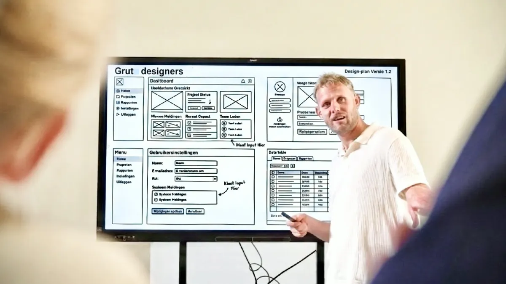
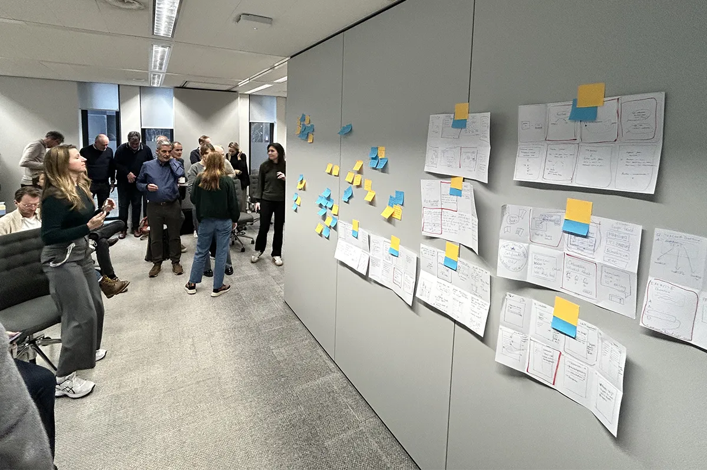
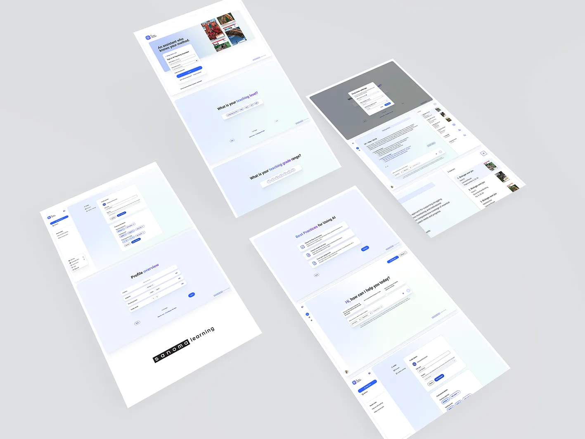
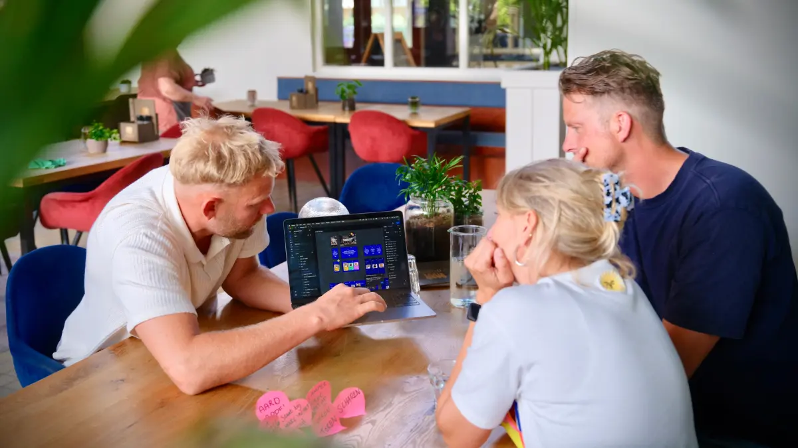
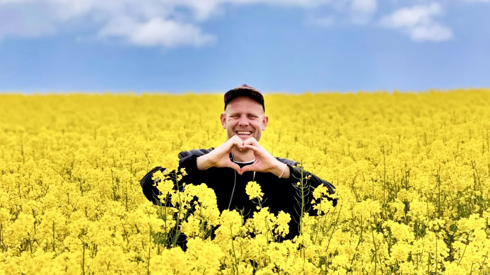
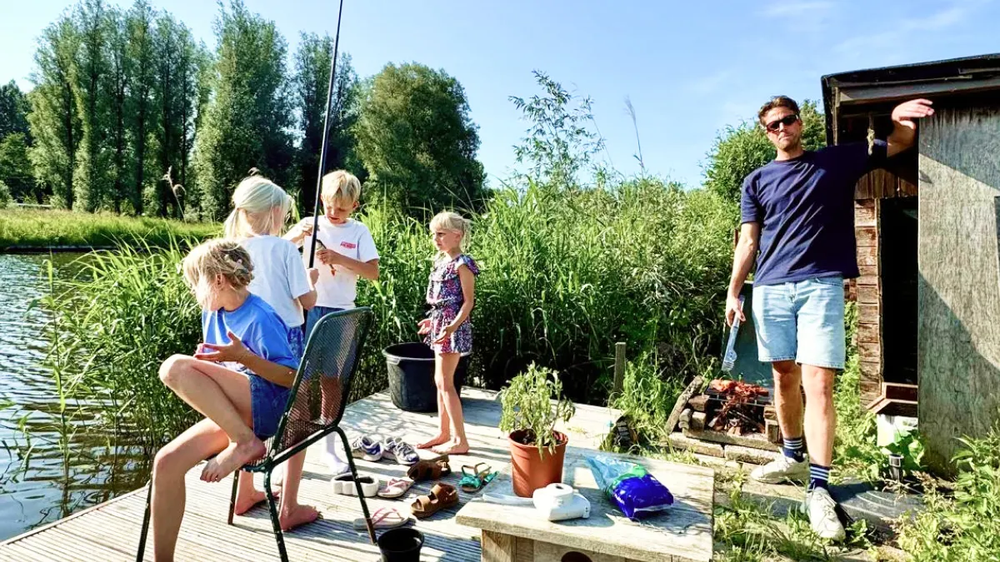

Wij

 geloven dat
geloven dat
elke digitale ervaring
moeiteloos moet voelen
Wij
geloven dat elke
digitale ervaring
moeiteloos
moet voelen
Wij
vertalen
zakelijke ambities naar
logisch digitaal gemak
Wij
vertalen zakelijke
ambities naar
logisch digitaal
gemak
Wij
ontwerpen
digitale producten die
bedrijven laten groeien
Wij
ontwerpen
digitale producten
die bedrijven
laten groeien


Strategie & analyse
We gaan in gesprek met gebruikers en analyseren bestaande data om inzichten en kansen duidelijk te krijgen.
- ✓ Begrijpen waar kansen en uitdagingen liggen
- ✓ Analyseren van gebruikers, markt en doelstellingen
- ✓ Bepalen wat de meeste impact maakt
- ✓ Vertalen van inzichten naar een slimme digitale aanpak

Vanuit inzicht adviseren we doelgericht en praktisch naar de vervolgstappen. Het brengt doelen, doelgroep en techniek samen tot één duidelijke koers die richting geeft aan ontwerp, ontwikkeling en marketing.
Producten die wij bieden
- ✓ Stakeholder / gebruikers interviews
- ✓ Concurrentieanalyse
- ✓ Customer journey mapping
- ✓ Gebruikersonderzoek
- ✓ Interviews of gebruikerstesten
- ✓ Data-analyse
- ✓ Positionering & strategische keuzes
- ✓ Informatiearchitectuur
- ✓ User flows
- ✓ Prioriteiten & roadmap
- ✓ Concept richtingen, wireframes
- ✓ UX/UI-richtlijnen
- ✓ Optimalisatiekansen
- ✓ Backlog of sprintplanning
Klaar om ambities te vertalen naar een concreet plan? Laten we samen de basis leggen voor een product dat écht werkt.


UX & UI design
Wij ontwerpen websites en applicaties die niet alleen mooi zijn, maar ook intuïtief en gebruiksvriendelijk werken.
- ✓ Visueel sterke ontwerpen
- ✓ Consistente design systems voor schaalbaarheid
- ✓ Interactieve prototypes voor snelle validatie en testing
- ✓ Toegankelijke en responsive designs voor elk apparaat

Door slimme UX, interactieve prototypes en solide design systems creëren we een sterke digitale basis waarin gebruiksvriendelijkheid, toegankelijkheid en een creatieve merkbeleving samenkomen.
Producten die wij bieden
- ✓ Interactieve prototypes en klikbare demo’s
- ✓ UI componenten en design systems
- ✓ Responsive interface designs
- ✓ Typografie, kleurgebruik en visuele stijl bepalen
- ✓ Toegankelijke interfaces volgens webrichtlijnen
- ✓ Design libraries en componentstructuren
- ✓ Micro-interacties en animaties
- ✓ Landingspagina’s
- ✓ Portalen
- ✓ Dashboards
Tijd om jouw visie tastbaar te maken? Laten we samen een digitaal product ontwerpen dat er niet alleen fantastisch uitziet, maar bovenal perfect werkt.

Conversie & groei
Door te meten, testen en optimaliseren maken we resultaten zichtbaar én schaalbaar, terwijl we klantreizen verbeteren.
- ✓ Hogere conversies en meer afgeronde aankopen
- ✓ Efficiëntere gebruikersflows met minder afhakers
- ✓ Snellere en gebruiksvriendelijkere digitale ervaringen
- ✓ Meer resultaat uit bestaande bezoekers en campagnes

Door klantreizen slimmer, sneller en gebruiksvriendelijker te maken, vergroten we de betrokkenheid en versterken we merkloyaliteit. Zo halen we het maximale rendement uit elke interactie.
Producten die wij bieden
- ✓ Optimalisatie van verkoopfunnels
- ✓ Verbetering van checkout-conversies
- ✓ Optimalisatie van productpagina’s
- ✓ Mobiele conversie-UX
- ✓ A/B-testvarianten voor designs
- ✓ Conversieoptimalisatie van landingspagina’s
- ✓ Optimalisatie van formulieren
- ✓ Upsell- en cross-sellflows

Klaar om meer rendement uit je digitale product te halen? Laten we samen kijken waar de onbenutte kansen liggen en direct impact maken.

Modulaire rapportages voor Dakota
Herbruikbare designcomponenten voor geautomatiseerde PDF's en e-mails.

Klantvraag
‘Ontwerp een flexibele basis van herbruikbare designcomponenten waarmee we dagelijks honderden PDF-rapportages en e-mails rondom 20.000 daken geautomatiseerd, clean en uniform kunnen genereren, en zorg voor een feilloze overdracht naar development.’
Doel
Het creëren van een schaalbaar designfundament voor de PDF- en e-mailexport. Omdat er continu automatisch gegenereerde data in de rapporten wordt geschoten, moest de output visueel zo clean en overzichtelijk mogelijk blijven, hoe complex de datasets ook zijn.
Slimme AI-testing & Code-generatie:
Omdat we miljoenen combinaties van datasets moesten kunnen opvangen, hebben we de vaste componenten direct blootgesteld aan stevige testen. Ik bouwde een Figma Make applicatie die realistische, willekeurige data in de nieuwe opmaak schoot om de componenten te stress-testen.

Daarnaast werd er een specifieke applicatie gebouwd voor de e-mailtemplates. Deze stuurde direct testmails naar diverse e-mailclients om de weergave te controleren. De absolute meerwaarde? Omdat e-mails uit statische code bestaan, genereerde deze testomgeving direct de volwaardig doorgeteste HTML-code, klaar voor gebruik.
Het resultaat in de praktijk
Door de communicatie op te knippen in vaste, herbruikbare elementen en deze grondig te testen met AI-tools, is er een uiterst schaalbare oplossing neergezet. Voor de eindklanten van Daklab betekent dit kraakheldere, professionele rapporten die altijd kloppen. Voor het developmentteam betekent deze aanpak, waarbij ze volledig doorgeteste HTML-code en een solide 'single source of truth' kregen aangeleverd, dat er uren aan maatwerk, frustratie en kostbaar 'rework' zijn voorkomen.
Worstel jij ook met complexe data-export of systemen die een slimme, modulaire UX-upgrade kunnen gebruiken? Laten we samen kijken hoe we jouw output visueel ijzersterk en de overdracht naar development efficiënter kunnen maken.

Bouwen aan Magister
Samen bouwen aan een vernieuwde app- en webomgeving voor Magister.

Klantvraag
'Help meebouwen aan een nieuwe app- en webomgeving voor Magister.'
De rol en aanpak
Bij Magister werkte ik aan de doorontwikkeling van het leerlingvolgsysteem voor het voortgezet onderwijs. De focus lag op het vertalen van een vernieuwde visuele stijl naar een consistente gebruikerservaring binnen het platform. Daarnaast draaide ik actief mee in multidisciplinaire ontwikkelteams, waarin ik verantwoordelijk was voor het verbeteren van de gebruiksvriendelijkheid van de software voor docenten en operationele medewerkers binnen scholen.
Naast UX design hielp ik mee aan het bouwen van een meer volwassen UX-team. We werkten samen aan projecten, organiseerden brainstormsessies en verzorgden workshops om klanten en leerlingen actief te betrekken bij de ontwikkeling van de nieuwe omgeving.

Doel
Het verhogen van de gebruiksvriendelijkheid, snelheid, consistentie en algehele uitstraling van Magister, zodat gebruikers efficiënter en prettiger kunnen werken binnen het leerlingvolgsysteem.
Gewenst resultaat
Het verbeteren van verschillende onderdelen binnen het leerlingvolgsysteem, waaronder de inschrijvingsportal, leerlingbeheer, schoolloopbaan, kluisjesbeheer en menustructuren. Hierbij lag de focus op betere leesbaarheid, intuïtief gebruik en een consistente gebruikerservaring ten opzichte van het bestaande systeem, zowel op desktop als mobiel.
Het resultaat in de praktijk
Werken aan een platform van deze omvang vereist structuur en visie. Door complexe modules zoals het inschrijfportaal en kluisjesbeheer logischer en overzichtelijker te maken, wordt het administratieve werk voor scholen aanzienlijk lichter. Daarnaast heeft de focus op samenwerking en workshops gezorgd voor een sterkere, meer volwassen UX-mindset binnen de organisatie zelf.
Ontwikkelt jouw organisatie ook complexe software of portalen en kun je tijdelijk extra UX-slagkracht of strategisch advies gebruiken? Laten we kijken hoe we jouw team en product kunnen versterken.
4
tools gebouwd
met AI
3
nieuwe
samenwerkingen
AI Docent assistent
Een AI-tool ontwerpen die docenten écht ontzorgt.

Mijn rol als UX-designer liep van eerste schetsen en conceptontwikkeling tot het ontwerpen van interactieve prototypes en het valideren hiervan met gebruikers. Op basis van deze inzichten maakten we de vertaalslag naar een werkende bèta-versie van de applicatie.
Klantvraag
De klantvraag is om binnen een klein team van specialisten vanuit een UX-rol mee te bouwen aan een AI-assistent die docenten ondersteunt in hun dagelijkse werkzaamheden.
Doel
Met behulp van een MVP-aanpak de kennis van docenten en Sanoma Uitgeverijen samenbrengen om een AI-tool te ontwikkelen die naadloos aansluit op de lesmethodes.

Gewenst resultaat
Binnen zes maanden een werkend model lanceren voor de vakken Nederlands, Engels en Biologie: van eerste concept tot een volledig functionerende AI-tool. De content wordt gegenereerd op basis van zowel LLM’s als bestaande lesmethodes. Hierdoor kunnen docenten eenvoudig toetsen, competenties en differentiatie toepassen die direct aansluiten op hun vak, lesinhoud en gebruikte methode, met als doel hun werkdruk te verlagen en hen zoveel mogelijk te ontzorgen.
Conversie boosten
Samen met de marketeers van Timing zorgde ik voor meer conversie op de vacature pagina's
Klantvraag
'Ontwikkel en verbeter diverse digitale tools die de klantreis optimaliseren en zorgen voor meer conversie.'
De rol en aanpak
Bij Timing werkte Jurrit nauw samen met het digital marketingteam aan het ontwikkelen van nieuwe digitale concepten om de totale klantbeleving te verbeteren. Het uitgangspunt was helder: sollicitanten op een eenvoudige en effectieve manier begeleiden naar passend werk, met als resultaat een hogere instroom, beter behoud en meer doorstroom van uitzendkrachten. Om dit te realiseren, werd er een sterke brug geslagen tussen marketing, developers en product owners.

Doel
Het ontwikkelen van meerdere online oplossingen die de klantreis stroomlijnen. Een gebruiksvriendelijke, persoonlijke digitale ervaring neerzetten die zorgt voor een aantoonbaar hogere conversie op openstaande vacatures.
Gewenst resultaat
Een app en website met een slimme keuzehulp, waarbij vacatures direct gekoppeld worden aan de hand van vijf simpele vragen die aansluiten op de wensen van de werkzoekende. Daarnaast het neerzetten van een verbeterde websitestructuur met duidelijke navigatie, meer visuele consistentie en het gebruik van sfeervol beeldmateriaal om persoonlijker en toegankelijker over te komen. Het ultieme doel: het verhogen van het aantal succesvol ingevulde vacatures.
Het resultaat in de praktijk
Een feilloze user journey is goud waard. Door de drempel te verlagen met een intuïtieve keuzehulp en de navigatie logischer in te richten, voelt de zoektocht naar een baan ineens als een service op maat in plaats van een zoektocht. Dit leidt niet alleen tot een prettigere ervaring voor de sollicitant, maar resulteert voor Timing direct in meer én beter passende sollicitaties.
Blijven bezoekers op jouw platform hangen zonder te converteren, of kan jouw digitale klantreis wel een strategische optimalisatieslag gebruiken? Laten we samen de flows stroomlijnen en je rendement verhogen.
Digitale innovaties in het onderwijs
Research, mockups en prototypes als bouwstenen
‘Hoe kunnen we nieuwe digitale proposities ontwikkelen, bespreken met gebruikers en intern succesvol laten landen?’. Binnen het innovatieteam van Sanoma Learning werkte Jurrit aan het ontwerpen, testen en valideren van verschillende digitale concepten en proposities voor het voortgezet onderwijs. De focus lag op het ontwikkelen van nieuwe digitale innovaties die richting geven aan toekomstige producten en diensten voor Sanoma.
Samen met multidisciplinaire teams onderzocht ik nieuwe kansen, werkte ik ideeën uit naar concrete concepten en vertaalde ik complexe vraagstukken naar visuele praatplaten, prototypes en interactieve flows. Hierbij stond het MVP toetsen bij gebruikers centraal, zodat ideeën niet alleen intern gedragen werden, maar ook daadwerkelijk aansloten op de behoeften van docenten.

Doel
Het ontwikkelen en valideren van nieuwe digitale proposities die bijdragen aan toekomstige innovaties binnen het onderwijs, met focus op het verbeteren van de digitale leer- en gebruikerservaring voor leerlingen en docenten.
Gewenst resultaat
Het opleveren van concepten, praatplaten en interactieve prototypes waarmee nieuwe digitale proposities onderzocht, getest en gevalideerd konden worden bij de gebruikers. Daarnaast lag de focus op het creëren van intern draagvlak voor digitale innovatie door stakeholders actief mee te nemen in het gehele proces en mee te laten denken over deze plannen.
0
bullshit
eindeloos gelul
smoesjes
afschuiven
🤟


Via verschillende rollen groeide mijn focus richting digital design en heb ik me uiteindelijk volledig gespecialiseerd in UX design. Voor mij is dat het vak waarin alles samenkomt: techniek, gedrag en vorm. De afgelopen 5 jaar heb ik als UX designer gewerkt in diverse DevOps teams. Na jaren in loondienst bij verschillende internet- en reclamebureaus heb ik dit jaar de stap gezet naar het zelfstandig ondernemerschap, om me nu volledig op Grut Designers te storten samen met Jurrit.
In de kern ben ik een maker met een hands-on aanpak. Ik maak het liefst dingen die in de basis al goed bedacht zijn, dus ik denk graag mee over de strategie voordat we in de actiestand gaan. Daarna zoek ik graag de efficiëntie op, bijvoorbeeld door uit te zoeken hoe we AI-gedreven workflows slim voor ons kunnen laten werken. Recent heb ik zelf onze eigen website gemaakt in Google Antigravity. Ik wil niet eindeloos over details praten, maar bouwen, testen en zorgen voor een digitaal product dat écht werkt. Weinig lullen, veel poetsen.

Ook buiten werktijd maak ik graag dingen. Dat kan een digitaal product zijn, maar net zo graag een overkapping, een kast, een tafel of een egelhuisje samen met mijn kids. Ik woon samen met mijn vrouw Fardau en onze twee dochters in Leeuwarden. Ik hou van buiten leven: vissen, barbecueën, snowboarden, sporten en de natuur in. Daarnaast ben ik al twintig jaar betrokken bij de lokale skatecommunity, waarvoor ik evenementen organiseer en de Leeuwarder skateparken mede heb ontworpen. Het ondernemende kan ik nu goed kwijt in Grut.
Welke gebruikerservaringen spreken je aan?
Spotify, het Makita LXT accusysteem, Wireless CarPlay, een gelijksluitende cilinder voor huis en tuin, iOS glass design, Philips Hue, een lekker lopend molentje op een werphengel en snowboardjassen met een skipashouder in de mouw.
Jappy Toering


Via de e-commercewereld groeide die focus steeds meer richting klantbeleving. Daar ontdekte ik mijn passie voor digitale ervaringen die echt kloppen: van e-mailflows die logisch en persoonlijk aanvoelen tot apps die je dagelijks met plezier gebruikt en klantreizen die soepel, slim en doordacht zijn opgebouwd.
Inmiddels werk ik al ruim vijf jaar als zelfstandig UX designer. Soms als specialist, soms als team lead, maar eigenlijk vooral als verbinder tussen marketeers, developers en eindgebruikers. Want de beste oplossingen ontstaan niet alleen in een Figma-bestand, maar in goede samenwerkingen en gesprekken.

Mijn interesse ligt in mensen hun gedrag, motivaties en vooral de vraag achter de vraag. Ik krijg energie van MVP-werken: snel iets neerzetten, testen, verbeteren en opnieuw proberen. Niet eindeloos praten over perfectie, maar ontdekken wat écht werkt en daarmee verschil maken voor gebruikers.
En buiten werktijd? Dan ben ik meestal te vinden in de natuur tijdens het sporten of op het water. Midden in een klusproject waarvan ik dacht dat het “maar een middagje werk” zou zijn, of onderweg naar een nieuw avontuur klein of groot.
Welke gebruikerservaringen spreken je aan?
Liefde voor olifantenpaadjes, kruislijnlaser, Solingen tomaten kartelmes, zelfscan kassabonnetje AH kassa, Flitsmeister app, Marktplaats zoekopdrachten, Notion borden.
Jurrit Dijkstra
De vrienden van Grut 🔥
We hebben vrienden met gouden handen, scherpe pennen en een goed stel hersens waarmee we graag samenwerken. Van developers tot fotografen. Een team op maat voor elke klus.